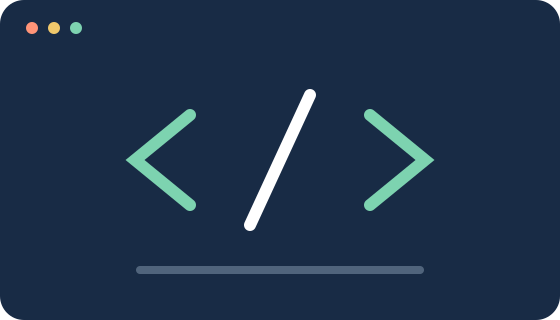

Веб-разработчик
Создаёт страницы и интерфейсы, которыми мы пользуемся в браузере.
- HTML и CSS
- JavaScript
- Git и GitHub
Создавать сайты, проверять приложения или анализировать данные? Познакомься с тремя профессиями и выбери, с чего начать.
Сравнить профессии
Создаёт страницы и интерфейсы, которыми мы пользуемся в браузере.
Находит ошибки и проверяет, соответствует ли приложение требованиям.
Изучает данные и помогает принимать решения на основе фактов.
| Профессия | Основная задача | Первый проект |
|---|---|---|
| Веб-разработчик | Создание веб-страниц | Личный сайт |
| Тестировщик | Поиск и описание ошибок | Проверка формы входа |
| Аналитик данных | Поиск закономерностей | Отчёт об учебных результатах |
Справочник для изучения разметки: HTML на MDN. Подробнее о проверке — на странице проекта.